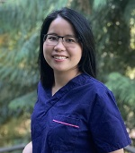
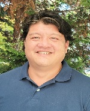
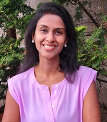

Meet the Team

Caixia Lan DMD
Dr. Lan and her team are passionate about helping patients achieve optimal dental health through patient education and prevention. Dr. Lan’s priority is achieving lasting oral heath which starts by listening to you, the patient, and what your smile goals are. She is dedicated to each of her patients’ smiles with a simple philosophy; treat patients as if they were her own family.
Dr. Lan received her first dental degree in Shanghai, China. Upon moving to the United States, she advanced her dental education from the University of Boston where she graduated with honors. After moving to the Seattle area with her family three years ago, Dr. Lan has found her dental family with Redmond Way Dentistry and our wonderful patients. In her free time, she enjoys hiking the beautiful northwest trails, skiing, and discovering new restaurants.
Fluent languages to help patient communication: English, Mandarin, and Taiwanese.
Frank Rho DDS 
Dr. Rho offers 25 years of experience in general and advanced dentistry. He has dedicated his career to learning the most advanced dental techniques available with an overall focus of customized function and optimum oral health through general dentistry, dental Implants, orthodontics, cosmetic dentistry and full mouth reconstruction. You are the patient. Each person has different dental goals with individual needs. This is where Dr. Rho finds his years of experience and skill level most helpful to his patients. Your dental needs can all be treated in one place with one health-oriented goal you and Dr. Rho have co-collaborated on together, achieving your most optimum dental health and longevity.
Graduate of Loma Linda University School of Dentistry in 1997. After graduating, Dr. Rho advanced his skill and training to master Oral and Maxillofacial Surgery and Dental Implant placement. This training level then led to more comprehensive full mouth reconstruction options. Today, Dr. Rho has treated thousands of happy patients in his career, and he brings the entire scope of his experience, care and skill to you, with the best options dentistry has to offer efficiently and comfortably.
After several years away and owning his own practices, Dr. Rho has returned to Washington where he grew up to be closer to his family and live in the state, he always called home. In his opinion, there is nowhere more beautiful than the Pacific Northwest.
Malavika Prasanna DDS
Dr. Prasanna has a strong passion for restorative dentistry with a focus on communication and collaboration with her patients. This passion has allowed her to help her patients achieve their dental goals while improving their overall dental health. Dr. Prasanna has made it her personal goal to offer her patients the best quality in general dentistry available with a personalized relationship. As Dr. Prasanna says, “Each patient becomes a part of my family”.
Dr. Prasanna’s dental studies started with Government Dental College in Bangalore, India where she was the top dental student in Prosthodontics. After moving to the United States, she furthered dental education with NYU College of Dentistry. This experience led to her making Redmond her dental home and allowed her to be part of a great community to share her passion for dentistry and patient relations.
In her free time Dr. Prasanna is a loyal Seahawks fan, enjoys the local Seattle art and music scene, and most importantly spending time with her two children and family.